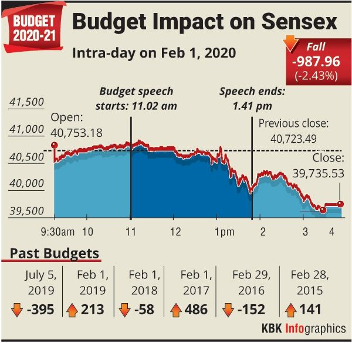
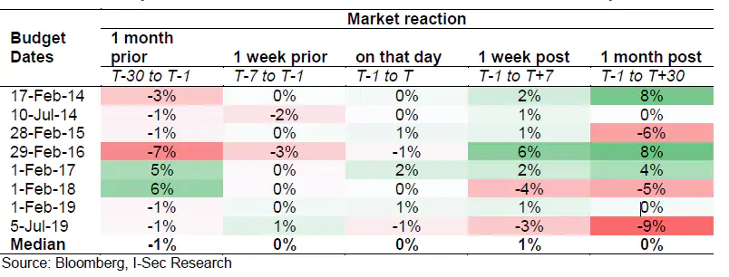
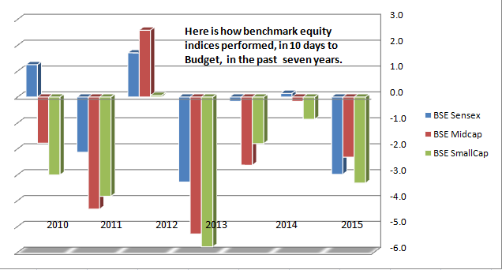
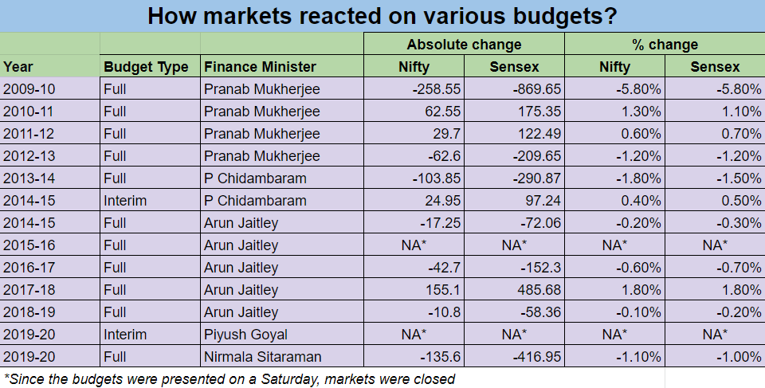
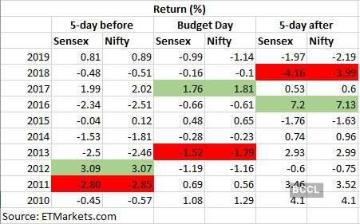

How Will Market React On Budget Day (1st Feb)?
Budget Announcement:#
1st Feb 2021 is the date for announcement of the Union Budget 2021 by the Finance Minister Nirmala Sitaram. Markets have always reacted very volatile on the day of announcement of Budget, as well as the days before and the days after ward. Lets take a comparison for effect:
1. Intraday Effect of Announcing Budget:#
Here’s a chart that will help you understand how the markets reacted intraday while the Budget was being announced live. Last year, Sensex fell 2.5%.

Budgets are usually announced in this time period of 11AM to 1PM.
2. Reaction to Budget Before and After:#
This is a comparison of the reaction of markets on different time frames of 1 month, 1 week before and after as well as on that day.

3. Reaction By Market Cap:#
We should not only take into account the reaction of market to budget by time, but also how it effects different segments of market by market cap.

4. Reaction over past 10 years:#
Here’s a complete list of how the markets reacted on the budget day for the past 10 years. 
*NA is shown for the Budgets which were announced when markets were closed on a Saturday.
5. Reaction over past 10 years, 5 day periods:#
Here’s a complete list of how the markets reacted on the budget day for the past 10 years, along with their earlier 5 day and afterwards 5 day movement.

*NA is shown for the Budgets which were announced when markets were closed on a Saturday.
6. Reaction of Different Sectors:#
Different sectors have reacted in different ways to the Budget. Here’s a link for full detail.
7. What Strategy to Follow?:#
a. For Short Term Traders:
If you are holding positions for time frames of 1 week or 1 month, you can look to book profits to avoid the massive volatility which will be caused during the budget, and also 1 week before the budget.
This is a good safe option.
b. For Intraday & Option Traders:
Intraday market is going to be the same, so you can keep trading the way you were already doing. Just keep caution of the strong and sudden movements which can come in the market.
For Live trading, Intraday, Short Term, Long Term and Positional Calls you can consider joing my Premium Group On Whatsapp or Free Telegram Group
c. For Long Term Investors:
Effect of Budget will be minor and will be recovered in 1 month’s time, so you dont need to worry much.
Maximum what you can do is book profits in a small quantity of your portfolio and use 10% of the amount in buying/shorting fresh stocks during the budget time.
8. What Strategies to Follow Sector-Wise?: (to be updated)#
Here’s my pick of sectors which will be benefitted by the budget:
a. Agriculture Sector:
Due to the recent farmers protest, the Govt can be inclined to produce a favourable budget in the agriculture sector and its subsidaries:
Stocks to Watch: UPL | Bayer Corp | PI Industries
b. Gas Sector (Strong Convection):
Govt is showing recent interest toward shifting towards cleaner fuels like CNG from coal etc, so Gas Stocks look favourable.
Stocks to Watch: IGL | MGL | Mahanagar Gas | Adani Gas | GAIL
IGL is my strongest conviction from this sector.
c. Healthcare/Pharma Sector:
Will receive huge impetus from Govt due to the recent Covid pandemic, also vaccine manufacture and distribution is a main factor.
Stocks to Watch: All pharma companies making the vaccine/close to making the vaccine.
Sun Pharma and Biocon are my personal picks for recent times. Also, for the purpose of distribution, Snowman Logistics is in line to get the contract for distribution of vaccine.
Disclaimer: I am not SEBI registered, no formal degree. Please make your own analysis before making any buy/sell call.
For Live trading, Intraday, Short Term, Long Term and Positional Calls you can consider joing my Premium Group On Whatsapp or Free Telegram Group
Support me by subscribing to my channel. Thanks in advance!
comments powered by Disqus